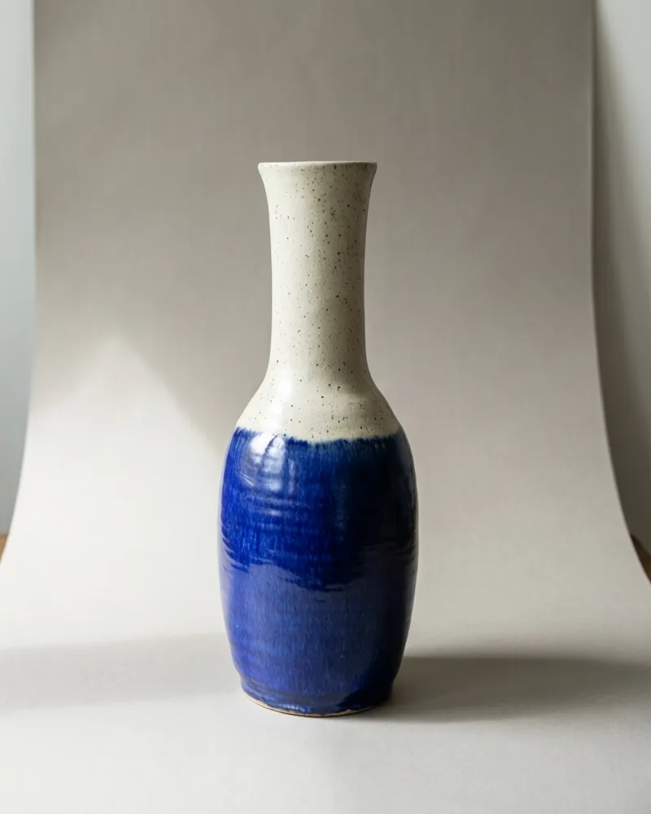
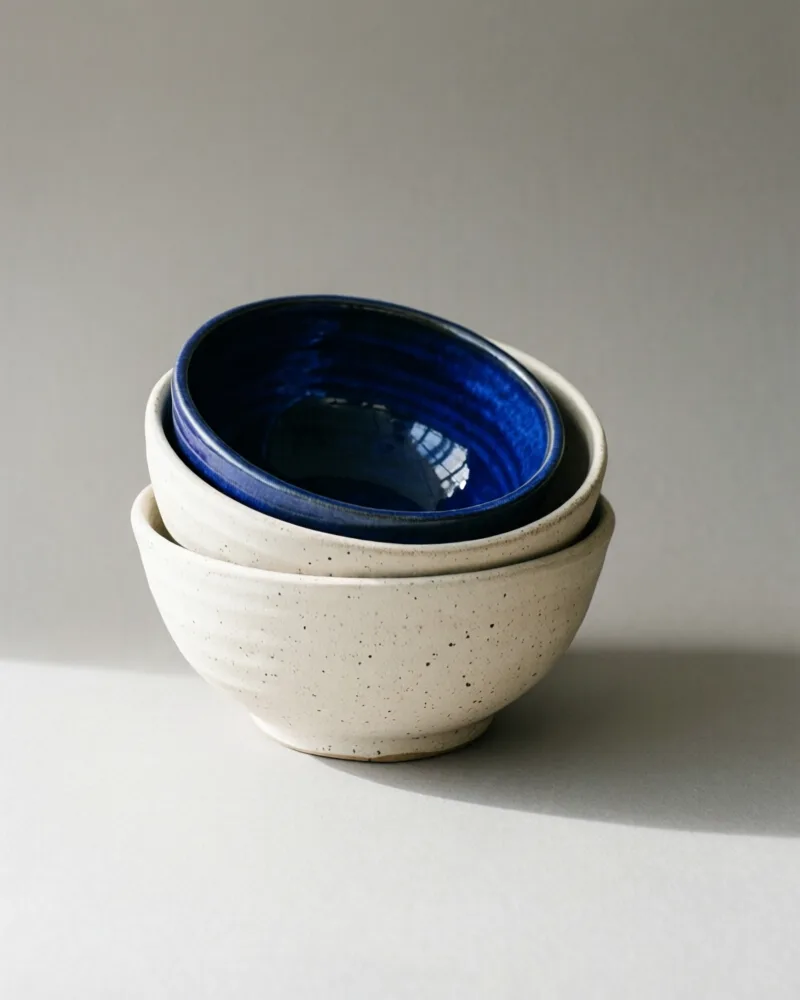

Petites séries et commandes, réalisées dans un atelier d'Exempleville.
Commandes ouvertes


Un service, un vase pour une étagère, un cadeau : dites-moi à quoi elle servira et où elle vivra.
Quelques lignes, une photo de l'endroit si vous en avez une.
Sous une semaine. Rien n'est dû avant votre accord.
Six à huit semaines, le temps qu'il faut à la terre pour sécher et cuire deux fois.